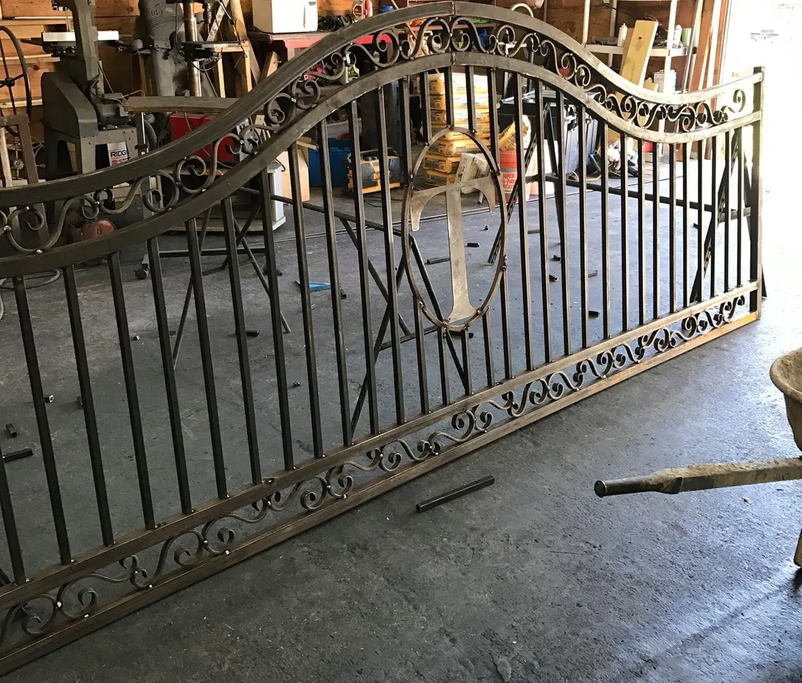
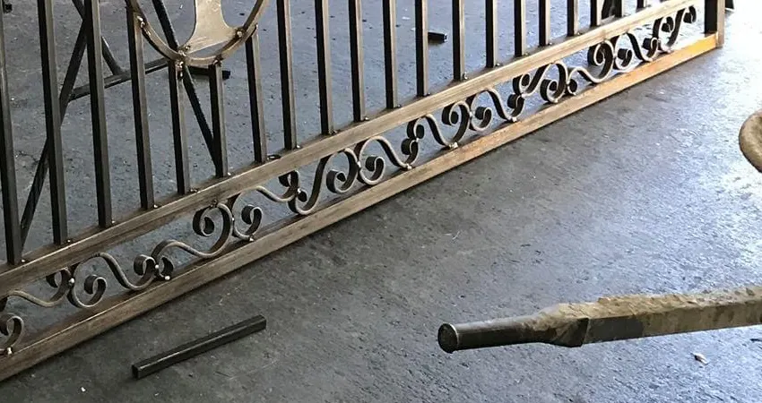

Custom gates & fences in Little Rock, AR
Fence contractor with steel fences, wood privacy fences and metal gates. Call or text us for a quote.

What we build
Fences and gates for homes in the Little Rock area. Call for a quote.
Steel fences
Strong metal fencing installed from start to finish.
Wood privacy fences
Sturdy wood fences for privacy around your yard.
Custom metal gates
Metal gates with decorative scrollwork, made to fit.
Automatic gate install
New automatic gates installed and set up.
Gate leveling
Got a gate that is not level? Ask us before you replace it.
Built in the shop
This gate was made in the Build Gates and Fences shop: curved top, scrollwork and steel bars.

Why customers choose us
Based on what customers wrote in their Google reviews.
- On time. Reviewers say we showed up exactly when we said we would.
- Quick work. Customers mention jobs finished quickly.
- Easy to work with. Described as professional and communicative.
- Quality work. Customers call the results fantastic and sturdy.
- Fair price. One reviewer called the price fair, reasonable and a great value.
Google reviews
4.7
230 Google reviews
★★★★★
We had a great experience with this company installing our steel fence. He and his wife were professional, communicative, and easy to work with from start to finish. They showed up exactly when they said they would, completed the job quickly, and handled a few unexpected challenges without any issues. The final result looks fantastic. Highly recommend.Charlene N. · 7 months ago
★★★★★
I needed a new automatic gate installed but my gate was not level. An individual who claimed to fix gates told me I needed a new gate with wheels, new hardware, etc... I decided to contact Build Gates and Fences and Roy and his wife arrived exactly when they said they would, leveled the gate and installed my gate within an hour for a very a reasonable price. I will contact them again when the need arises. I would highly recommend their services.Gale R · 4 months ago
★★★★★
I highly recommend this fence company! They did an excellent job installing my wood privacy fence from start to finish. The quality of the workmanship was outstanding, and the fence looks great and feels very sturdy and well-built. The crew was professional, hardworking, and paid attention to the details. I was also very pleased with the price — fair, reasonable, and a great value for the quality of work provided. It’s not always easy to find a company that delivers both quality and affordability, but they definitely did. If you’re looking for a reliable fence company that takes pride in their work and charges a fair price, I would definitely recommend them!Michael H. · 2 months ago
★★★★★
He did some fantastic work for me, ive been building my own fences for the longest time because i dont trust other peoples work but im getting too old for that now so i decided to call this guy over that my buddy recommended to me and he was great. He did the work quickly and timely and was very empathetic whenever i asked him to change things. Really appreciated his work. Definitely will go to him when it needs more tending to again.Bobby L. · a year ago
★★★★★
Absolutely amazing work and quality products. All the people leaving bad reviews are ridiculous. I had the best experience with Roy and page building my fence. Turn key in 2 days! I've called so many people for quotes and no one shows up. These guys not only showed up but went above and beyond to get my fence done. If you want work done these are the guys!Omeed E. · 4 years ago
Hours & location
Build Gates and Fences
19909 Joe Rd
Little Rock, AR 72210
| Monday | 7 AM–5 PM |
| Tuesday | 7 AM–5 PM |
| Wednesday | 7 AM–5 PM |
| Thursday | 7 AM–5 PM |
| Friday | 7 AM–5 PM |
| Saturday | 8 AM–3 PM |
| Sunday | 8 AM–3 PM |